Line plot#
[1]:
import scipp as sc
import plopp as pp
Basic line plot#
The most common way to plot data with Plopp is to use the plot function. This can either be done using the plopp.plot() free function, or calling the .plot() method on a Scipp data object (both are equivalent).
[2]:
da = pp.data.data1d()
da.plot()
[2]:
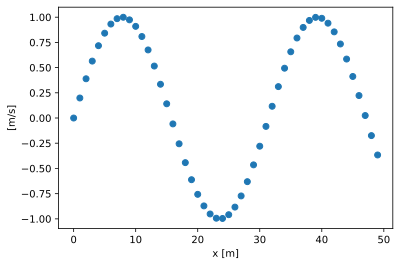
Changing line style and color#
[3]:
da.plot(linestyle='solid', color='black', marker=None)
[3]:
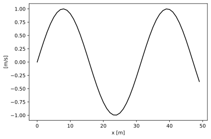
[4]:
da.plot(linestyle='dashed', linewidth=5, marker=None)
[4]:
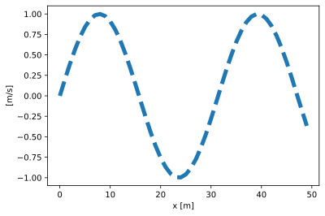
[5]:
da.plot(marker='^')
[5]:
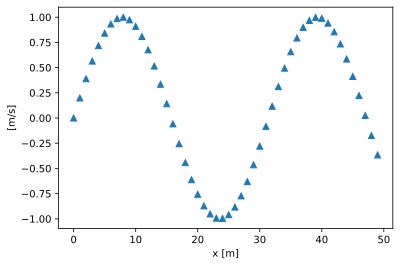
Controlling the axes#
Logarithmic axes#
[6]:
da.plot(scale={'x': 'log'})
[6]:
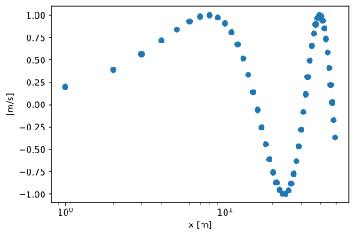
[7]:
da.plot(norm='log')
[7]:
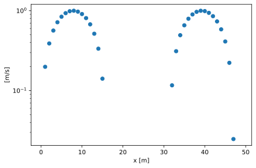
Setting the axes limits#
To set the range of the vertical axis, use the vmin and vmax keyword arguments:
[8]:
da.plot(vmin=sc.scalar(-0.5, unit='m/s'), vmax=sc.scalar(1.5, unit='m/s'))
[8]:
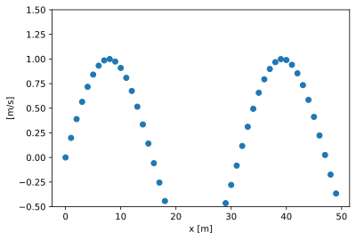
Note that if the unit in the supplied limits is not identical to the data units, an on-the-fly conversion is attempted. It is also possible to omit the units altogether, in which case it is assumed the unit is the same as the data unit.
[9]:
da.plot(vmin=-0.5, vmax=1.5)
[9]:
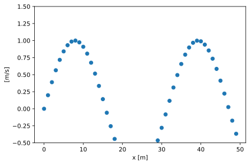
To set the range of the horizontal axis, slice the data before plotting:
[10]:
da['x', 10:40].plot()
[10]:
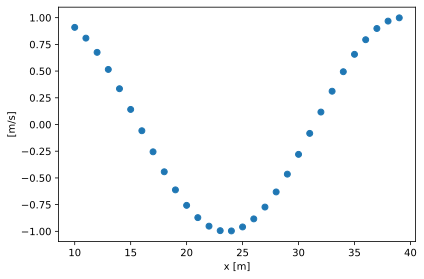
Overplotting#
The plot function will accept a dict of data arrays as an input, and will place all entries on the same axes (as long as all entries have the same units and dimension labels).
[11]:
pp.plot({'a': da, 'b': 0.2 * da})
[11]:
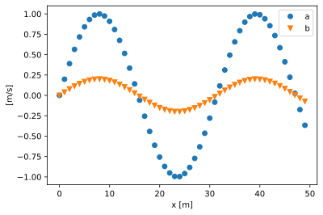
This also works with a dataset:
[12]:
ds = pp.data.dataset1d()
ds.plot()
[12]:
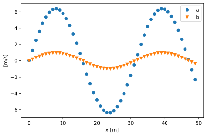
Customizing line styles for multiple entries#
If a single color is passed to plot when plotting a dict of data arrays, the color will apply to all entries
[13]:
pp.plot({'a': da, 'b': 0.2 * da}, color='red')
[13]:
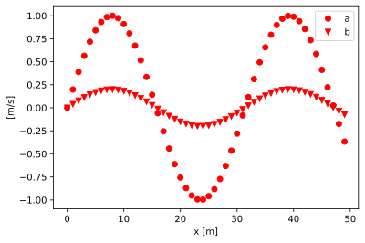
To control the style of the individual entries, the line properties should be a dict with the same keys as the input dict:
[14]:
pp.plot(
{'a': da, 'b': 0.2 * da},
color={'a': 'red', 'b': 'black'},
linestyle={'a': 'solid', 'b': 'dashed'},
marker=None,
)
[14]:
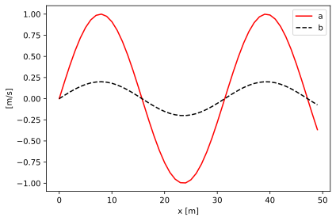
Bin edges#
When the coordinate of the data contains bin-edges, Plopp represents it as a step function instead of markers:
[15]:
da = pp.data.histogram1d()
pp.plot(da)
[15]:
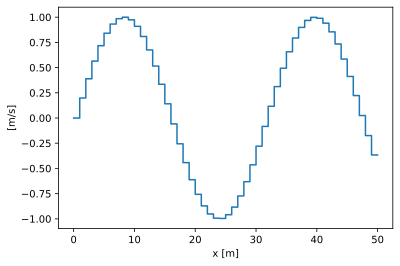
Masks#
Masks are represented by black markers
[16]:
da = pp.data.data1d()
da.masks['large-x'] = da.coords['x'] > sc.scalar(30, unit='m')
pp.plot(da)
[16]:
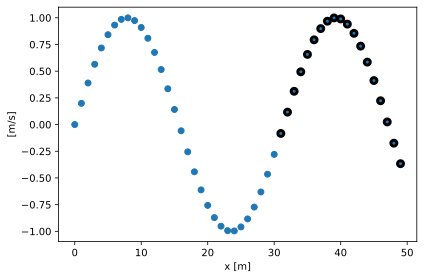
or a thick black line in the case of bin-edges
[17]:
da = pp.data.histogram1d()
da.masks['close-to-zero'] = abs(da.data) < sc.scalar(0.5, unit='m/s')
pp.plot(da)
[17]:
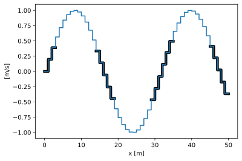
Using a non-dimension coordinate#
For a dimension of name 'x', Plopp will use the corresponding coordinate of name 'x' to set the horizontal position of the points and the axis labels. To use a different coordinate, use the coords argument.
[18]:
da = pp.data.data1d()
da.coords['x2'] = da.coords['x'] ** 2
pp.plot(da, coords=['x2'])
[18]:
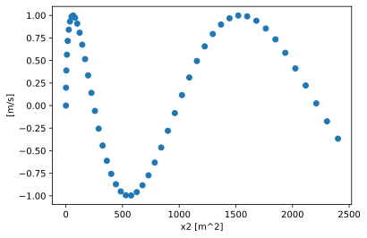
Note that if no coordinate of name 'x' exists, a dummy one will be generated using scipp.arange.
Plotting one variable as a function of another#
 New in version 23.10.0.
New in version 23.10.0.
Sometimes it is useful, for quickly inspecting data, to plot one variable as a function of another, without having to first explicitly store them both in a DataArray.
For this, one can use a small dedicated function called xyplot:
[19]:
x = sc.arange('distance', 50.0, unit='m')
y = x**2
pp.xyplot(x, y)
[19]:
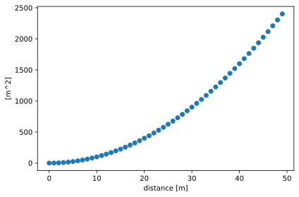
Any additional keyword arguments are forwarded to the plot function:
[20]:
pp.xyplot(x, y, ls='solid', color='purple', marker=None, lw=3)
[20]:
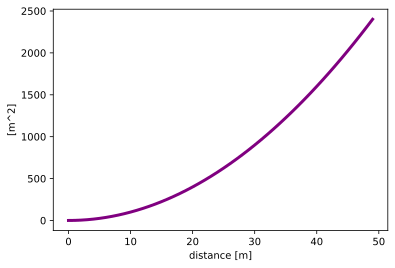